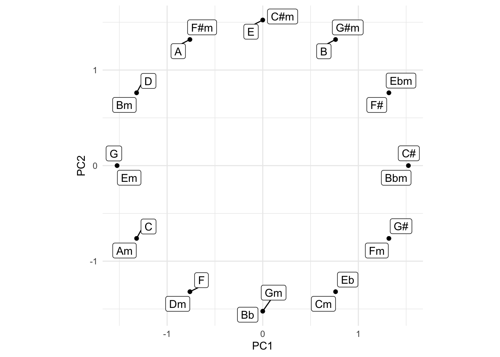

library("tibble")
library("dplyr")
library("tidyr")
library("broom")
library("ggplot2")
library("ggrepel")In this brief post, we will take a look at what happens if we mix data science and music… Should be good… For this post to make sense, you’ll need to know a bit of musical theory and a bit of data science - Enjoy!
First, let us start off by loading some packages:
Then, we will one-hot encode the major scale of each key by denoting a given tone 1 if it is in the scale and a 0 otherwise:
major_scales <- tribble(
~key, ~C, ~`C#`, ~D, ~Eb, ~E, ~F, ~`F#`, ~G, ~`G#`, ~A, ~Bb, ~B,
"C", 1, 0, 1, 0, 1, 1, 0, 1, 0, 1, 0, 1,
"C#", 1, 1, 0, 1, 0, 1, 1, 0, 1, 0, 1, 0,
"D", 0, 1, 1, 0, 1, 0, 1, 1, 0, 1, 0, 1,
"Eb", 1, 0, 1, 1, 0, 1, 0, 1, 1, 0, 1, 0,
"E", 0, 1, 0, 1, 1, 0, 1, 0, 1, 1, 0, 1,
"F", 1, 0, 1, 0, 1, 1, 0, 1, 0, 1, 1, 0,
"F#", 0, 1, 0, 1, 0, 1, 1, 0, 1, 0, 1, 1,
"G", 1, 0, 1, 0, 1, 0, 1, 1, 0, 1, 0, 1,
"G#", 1, 1, 0, 1, 0, 1, 0, 1, 1, 0, 1, 0,
"A", 0, 1, 1, 0, 1, 0, 1, 0, 1, 1, 0, 1,
"Bb", 1, 0, 1, 1, 0, 1, 0, 1, 0, 1, 1, 0,
"B", 0, 1, 0, 1, 1, 0, 1, 0, 1, 0, 1, 1
)Then we will perform a Principal Component Analysis of the data:
scales_pca <- major_scales %>%
column_to_rownames("key") %>%
prcomp %>%
tidy %>%
rename(key = row) %>%
filter(PC %>% between(1, 2)) %>%
pivot_wider(id_cols = key,
names_from = PC,
values_from = value) %>%
rename(PC1 = `1`,
PC2 = `2`)Finally, we will visualise the data using the first two principal components:
scales_pca %>%
ggplot(aes(x = PC1,
y = PC2,
label = key)) +
geom_label() +
coord_fixed() +
theme_minimal()Looks familiar? But what happens if we add minor as well?
minor_scales <- tribble(
~key, ~C, ~`C#`, ~D, ~Eb, ~E, ~F, ~`F#`, ~G, ~`G#`, ~A, ~Bb, ~B,
"Cm", 1, 0, 1, 1, 0, 1, 0, 1, 1, 0, 1, 0,
"C#m", 0, 1, 0, 1, 1, 0, 1, 0, 1, 1, 0, 1,
"Dm", 1, 0, 1, 0, 1, 1, 0, 1, 0, 1, 1, 0,
"Ebm", 0, 1, 0, 1, 0, 1, 1, 0, 1, 0, 1, 1,
"Em", 1, 0, 1, 0, 1, 0, 1, 1, 0, 1, 0, 1,
"Fm", 1, 1, 0, 1, 0, 1, 0, 1, 1, 0, 1, 0,
"F#m", 0, 1, 1, 0, 1, 0, 1, 0, 1, 1, 0, 1,
"Gm", 1, 0, 1, 1, 0, 1, 0, 1, 0, 1, 1, 0,
"G#m", 0, 1, 0, 1, 1, 0, 1, 0, 1, 0, 1, 1,
"Am", 1, 0, 1, 0, 1, 1, 0, 1, 0, 1, 0, 1,
"Bbm", 1, 1, 0, 1, 0, 1, 1, 0, 1, 0, 1, 0,
"Bm", 0, 1, 1, 0, 1, 0, 1, 1, 0, 1, 0, 1,
)…and again, we perform a PCA:
scales_pca <- major_scales %>%
bind_rows(minor_scales) %>%
column_to_rownames("key") %>%
prcomp %>%
tidy %>%
rename(key = row) %>%
filter(PC %>% between(1, 2)) %>%
pivot_wider(id_cols = key,
names_from = PC,
values_from = value) %>%
rename(PC1 = `1`,
PC2 = `2`)…and visualise using ggrepel to avoid overlapping labels:
scales_pca %>%
ggplot(aes(x = PC1,
y = PC2,
label = key)) +
geom_label_repel() +
geom_point() +
coord_fixed() +
theme_minimal()
…and there you have it - If you do a PCA on one-hot encoded major and minor scales, you get the circle of fifths!